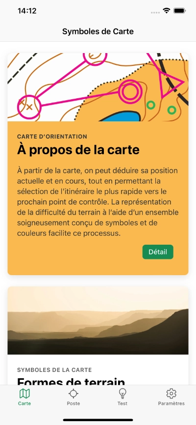
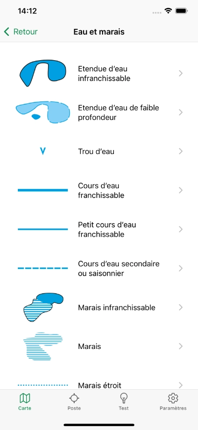
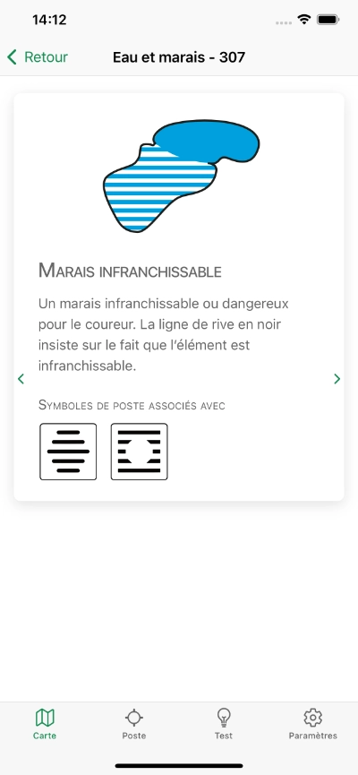
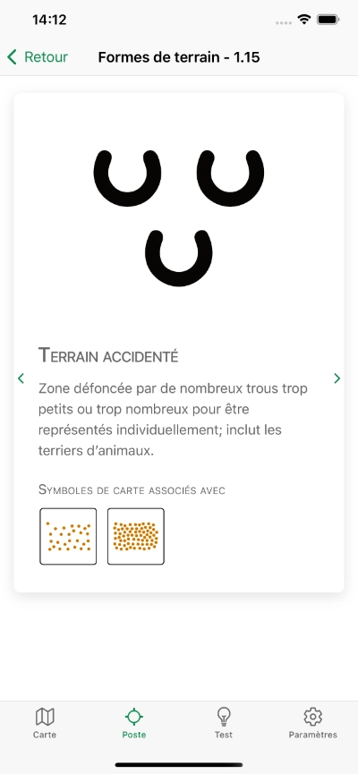
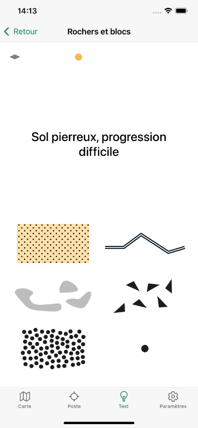
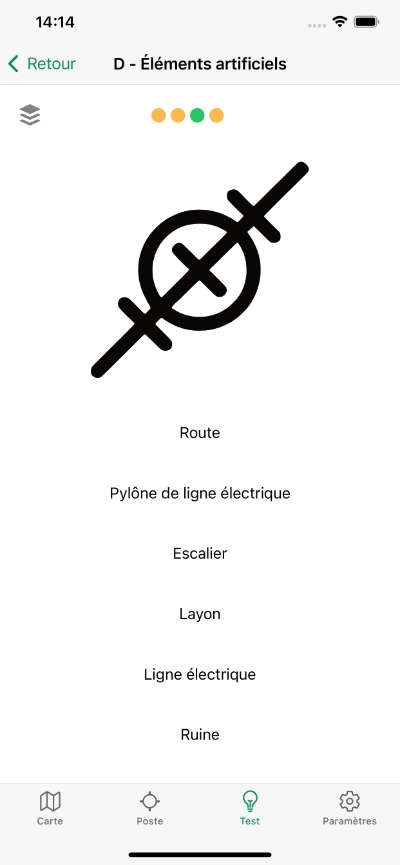
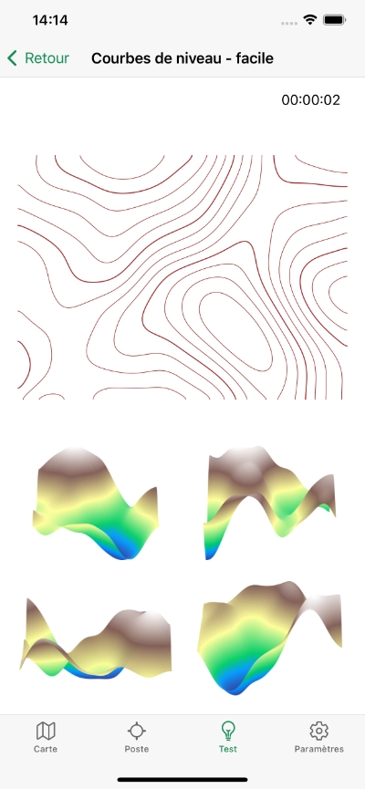
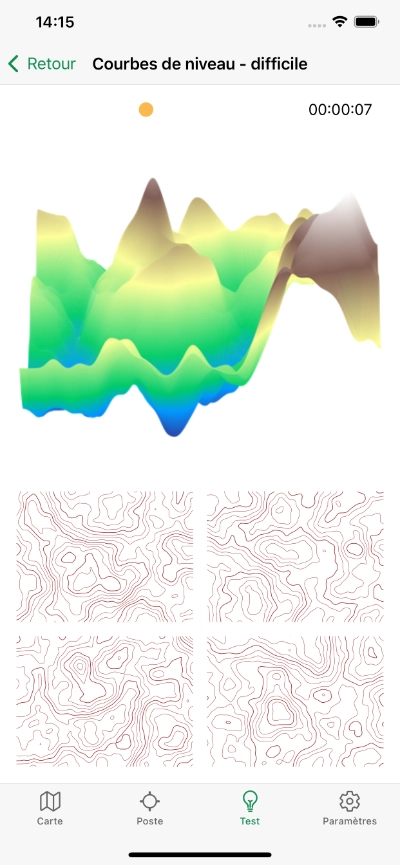

Orisym
Orientez-vous avec assurance
Apprentissage, tests et catalogue des symboles de course d'orientation










Pourquoi Orisym ?
- Vous apprendrez la signification détaillée de chaque symbole de course d'orientation
- En testant vos connaissances, vous découvrirez votre niveau et pourrez vous améliorer
- Dans le catalogue des symboles cartographiques et des symboles de postes, vous trouverez leurs descriptions détaillées
- Vous découvrirez les corrélations entre les deux types de symboles et leurs relations
- Vous améliorerez votre orientation spatiale en apprenant à reconnaître le terrain grâce aux courbes de niveau
- L'application fonctionne hors ligne, sans besoin de connexion internet